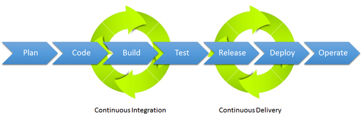
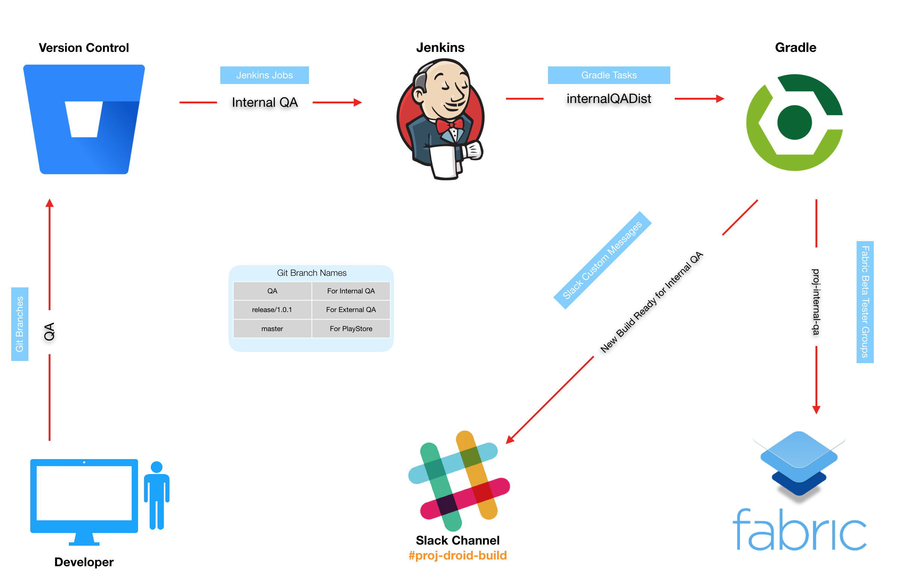

Introduction
From DevOps (wikipedia) we read:
DevOps is a set of practices that combines Software development
(Dev ) and Information technology (IT) operations operations (Ops ).
IT operations can be defined as the people and management processes associated with IT service management to deliver the right set of services at the right quality and at competitive costs for customers..
DevOps aims to shorten the systems development life cycle and provide Continuous_delivery with high software quality.
Several DevOps practices came from
Agile software development.
IT operations can be defined as the people and management processes associated with IT service management to deliver the right set of services at the right quality and at competitive costs for customers..
DevOps aims to shorten the systems development life cycle and provide Continuous_delivery with high software quality.
- Workflow organization
- Self-testing code
- Code quality control
- Continuous Integration
- Continuous Delivery
- Continuous Deployment
- Continuous Monitoring
CI tools
One of the necessities for the execution of Continuous Integration is the use of CI tools, also known as build servers. Currently, there is a wide range of continuous integration tools.We will look at
-
Jankins
 Today Jenkins is the leading open-source automation server with some 1,600 plug-ins to support the automation of all kinds of development tasks. The problem Kawaguchi (the author - when in SUN - of Hudson) was originally trying to solve, continuous integration and continuous delivery of Java code (i.e. building projects, running tests, doing static code analysis, and deploying) is only one of many processes that people automate with Jenkins. Now, 1,600 plug-ins span five areas: platforms, UI, administration, source code management, and, most frequently, build management. - GitLab CI/CD
 GitHub Actions
GitHub Actions
Introduction to GitHub Actions
A project
In C:\...\cidemo: gradle init 2 4 1 2 - -
git status git add -A git commit -m "startup" git push origin main
In https://github.com/.../cidemo/actions/new Skip this and set up a workflow yourself -> name: CIdemoStart on: [push] jobs: build: runs-on: ubuntu-latest# downloads a copy of your repository on the runner steps: - uses: actions/checkout@v2 - name: Set up JDK 1.8#configures the Java 1.8 JDK uses: actions/setup-java@v1 with: java-version: 1.8 - name: Change wrapper permissions run: chmod +x ./gradlew #to gain gradlew run permission - name: Build with Gradle run: ./gradlew build- uses: actions/upload-artifact@v2 #see https://github.com/actions/upload-artifact with: name: Package path: build/libs #runs the gradlew wrapper script to ensure that your code builds, tests pass, and a package can be created
Start commit ... Commit new file
git pull=> appears .github/workflows/main.yml
Build error:
CI
https://docs.github.com/en/free-pro-team@latest/actions/learn-github-actions/migrating-from-jenkins-to-github-actions https://docs.github.com/en/free-pro-team@latest/actions/learn-github-actions/introduction-to-github-actions https://docs.github.com/en/free-pro-team@latest/actions/learn-github-actions https://knapsackpro.com/ci_comparisons/jenkins/vs/github-actions ORACLE cbTP=d-vwW*tA3 set JAVA_HOME="C:\Program Files\Java\jdk-11.0.9" https://vimeo.com/138873446 Xtext https://dl.bintray.com/jetbrains/kotlin/eclipse-plugin/0.8.18/ eclipse -vm "C:\Program Files\Java\jdk-12.0.1\bin" GIT (with DEVOPS intro) https://www.youtube.com/watch?v=hDxIdPxKt5w https://www.youtube.com/watch?v=N_bMCff8q6A ** GITHUB actions https://www.youtube.com/watch?v=R8_veQiYBjI&t=17s *** GRADLE https://www.youtube.com/watch?v=kONQCIAcWeI https://www.youtube.com/watch?v=Nabjqv8KDgc TechWorld with Nana DOCKERFILE https://www.youtube.com/watch?v=WmcdMiyqfZs DOCKER https://www.youtube.com/watch?v=3c-iBn73dDE DOCKER - DOCKER Compose ** (general, no yaml explaination) https://www.bing.com/videos/search?q=docker+compose+video&docid=608050950300107607&mid=E2BF30F99FEA101525DEE2BF30F99FEA101525DE&view=detail&FORM=VIRE https://www.bing.com/videos/search?q=docker+compose+video&docid=608046895837873695&mid=4CF92B5BD37B5846E8FA4CF92B5BD37B5846E8FA&view=detail&FORM=VIRE (Flask, Python) KUBERNETES https://www.youtube.com/watch?v=3c-iBn73dDE https://www.youtube.com/watch?v=X48VuDVv0do AWS container services https://www.youtube.com/watch?v=AYAh6YDXuho ISTIO https://www.youtube.com/watch?v=16fgzklcF7Y MICROSERVICES https://www.youtube.com/watch?v=BnknNTN8icw https://www.youtube.com/watch?v=xzJO03LpapI SPRING BOOT https://www.youtube.com/watch?v=27dPN4aMz30 no more docker https://www.youtube.com/watch?v=7KUdmFyefSA DOCKERHUB https://hub.docker.com/ SIGN IN https://docs.docker.com/docker-hub/ DOCS ---------------------------------------------------------- Nana Janashia video Developing with Docker ► https://youtu.be/6YisG2GcXaw Js + MOngo Docker Compose ► https://youtu.be/MVIcrmeV_6c MongoDb + MongoExpress Dockerfile ► https://youtu.be/WmcdMiyqfZs Private Repository ► https://youtu.be/vWSRWpOPHws Deploy your containerized Application ► https://youtu.be/ZowjOhpAcIc Docker volumes ► https://www.youtube.com/watch?v=p2PH_YPCsis You can check out my videos for the Pre-Requisites: ✅ Basic Docker Concepts: https://youtu.be/GeqaTjKMWeY ✅ Basic Commands: https://youtu.be/xGn7cFR3ARU
Create an image using Docker commands
docker build -t xxx:1.2 . docker run -ti -p ppp:qqq -p ...:... --rm xxx:1.2 /bin/bash or /bin/sh
Create and register an image using Docker commands
ASteps:
- Sign up for a Docker account
- Create your first repository
- Build a Docker container image on your computer
- Push it successfully to Docker Hub
- Sign into the Docker Desktop application using the Docker ID
docker login -u="$DOCKER_USERNAME" -p="$DOCKER_PASSWORD" docker login -u="natbodocker" -p="...."WARNING! Using --password via the CLI is insecure. Use --password-stdin. See Log in to a Docker registry type docker_password.txt | docker login --username natbodocker --password-stdin - CREATE IMAGE FROM Dockerfile
docker build -t docker build -t natbodocker/citest:1.0 ./my-private-repo . The dot "." at the end of the command denotes location of the Dockerfile. TEST the image locally docker run natbodocker/citest docker run -it image /bin/bash docker cp ./demo0.pl 09d3ce1e3ea0:/app/bin/demo0.pl -
TAG an image
docker tag [OPTIONS] IMAGE[:TAG] [REGISTRYHOST/][USERNAME/]NAME[:TAG] - PUSH the image
docker push natbodocker/citest
1.0: digest: sha256:c6aae5e9db4ad74b7e419aa9e2430b1b8fddd58b27c2ba16f94f34f8fa78c858 size: 1372 - PULL an image
docker pull [OPTIONS] NAME[:TAG|@DIGEST] docker pull natbodocker/citest:1.0
Create and register an image using Gradle
https://tomgregory.com/automating-docker-builds-with-gradle/java -jar springbootify.jar http://localhost:8080/doithttps://github.com/palantir/gradle-docker
https://plugins.gradle.org/plugin/com.palantir.docker
/*
Gradle plugins for working with Docker containers
*/
plugins {
id "com.palantir.docker" version "0.25.0"
id "com.palantir.docker-run" version "0.25.0"
}
version '0.1.0'
/*
specify a configuration for the com.palantir.docker plugin to build the image
*/
docker {
name "${project.name}:${project.version}"
files 'springbootify.jar'
}
//gradlew docker builds the image
/*
A specific configuration for running the container
configures the plugin to create a container with the given name,
using an image with the same name we configured in the docker configuration block
connecting to port 8080 on the container as this is what our application uses,
and exposing that on the host also on port 8080.
It’s useful to include the clean true property so that when you stop the container
it gets automatically removed as well.
*/
dockerRun {
name "${project.name}"
image "${project.name}:${project.version}"
ports '8080:8080'
clean true
}
//gradlew dockerRun run the container
//gradlew dockerStop stop the application
//gradlew build docker build your application, generate a jar file, build your image
/*
Go to Docker Hub - Repositories and create a private repository called gradle-docker-example
Docker’s mechanism to push an image to a central repository involves
first tagging the image with the repository name, then pushing it.
*/
docker {
name "${project.name}:${project.version}"
files 'springbootify.jar'
tag 'DockerHub', "natbodocker/gradle-docker-example:${project.version}"
}
/*
the DockerHub string we put in the tag configuration is used to dynamically generate
the tasks dockerTagDockerHub and dockerPushDockerHub.
Run gradlew tasks
*/
//gradlew dockerTagDockerHub tags the image
//AUTHENTICATE docker login
//gradlew dockerPushDockerHub Docker pushes are incremental.
docker run -it hub.docker.com/natbodocker/cidemo:1.1 /bin/bash bash-4.2# ls app app.bat demo0.pl sysRules.plbash-4.2# ./app Hello World with CI! UtilsInKotlin | loadRules userDirPath= /app/bin UtilsInKotlin | loadRules load sysRules.pl= yes. UtilsInKotlin | loadRules load demo0.pl= yes. App numOfActors=2 numOfActors = 2 docker run --rm natbodocker/cidemoapp:1.2 docker run -it --rm natbodocker/cidemoapp:1.2 /bin/bash
Using docker compose
docker netwrok ls docker-compose -f app.yaml up -d docker-compose -f app.yaml down
Create and register an image using GitHub Actions
Publishing Docker images.GitHub Actions (video-nana) 1475.